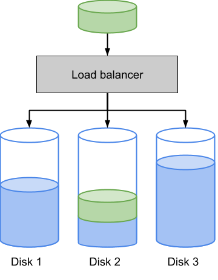

El balanceig de càrrega consisteix en la distribució de la feina a realitzar entre diferents recursos com ordinadors, clústers, línies de xarxa, unitats centrals de processament o dispositius de disc.
En aquest problema tractarem el balanceig de càrrega de dispositius de disc en funció de l'espai disponible.
Quan s'ha d'emmagatzemar un bloc de dades, el balancejador de càrrega escull el disc amb més espai disponible per a emmagaztemar-les:

Input Format
En primer lloc trobem el nombre de discs .
A continuació ve l'espai ocupat a cada disc.
Seguidament ve un seqüència amb els tamanys dels blocs de dades que s'han d'emmagatzemar. La seqüència finalitza amb un 0.
Constraints
-
Output Format
S'imprimirà l'espai ocupat en cada disc un cop s'han emmagatzemat tots els blocs.
Sample Input 0
2
0 0
2 3 6 1 5 2 0
Sample Output 0
10 9
Explanation 0
Disposem de dos discs, la ocupació inicial dels quals és:
0 0
Aleshores, arriba el primer bloc de dades de tamany 2, i el balancejador escull el primer disc:
2 0
Després, arriba el segon bloc de dades de tamany 3, i el balancejador escull el segon disc, ja que és el que menys ocupació té:
2 3
Després arriba el bloc de tamany 6, i el balancejador escull el primer disc, que està menys ocupat:
8 3
Quan arriba el bloc de tamany 1, el balancejador escull el segon disc:
8 4
Per al bloc de tamany 5, s'escull també el segon disc (el menys ocupat):
8 9
Per últim el bloc 2 s'escriu al primer disc:
10 9
Sample Input 1
3
1 4 5
1 2 3 4 5 0
Sample Output 1
7 8 10
Explanation 1
Inicialment tenim aquesta ocupació dels discs:
1 4 5
El bloc de tamany 1 s'escriu al primer disc:
2 4 5
El bloc de tamany 2 s'escriu al primer disc:
4 4 5
El bloc de tamany 3 s'escriu al primer disc:
7 4 5
El bloc de tamany 4 s'escriu al segon disc:
7 8 5
El bloc de tamany 5 s'escriu al tercer disc:
7 8 10
Sample Input 2
5
3 0 1 6 10
10 4 1 5 3 1 2 4 8 9 0
Sample Output 2
17 10 12 18 10
Sample Input 3
6
10 0 10 10 30 40
16 54 40 36 16 57 20 52 36 29 24 26 16 20 35 0
Sample Output 3
90 92 99 117 87 92
Sample Input 4
8
100 0 110 70 20 35 45 90
38 65 16 88 20 49 94 81 32 56 13 47 32 52 86 81 75 58 71 59 24 31 88 75 90 13 76 42 97 103 93 87 47 102 35 11 107 55 17 16 105 10 18 94 73 96 67 17 47 102 0
Sample Output 4
407 423 425 435 411 485 420 415